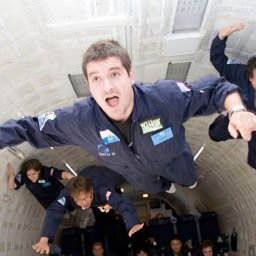

2nd Workshop on Urban Scene Modeling -- Wed 11 Jun 2025, Full Day. Room 104 D
Where Vision Meets Photogrammetry and Graphics - CVPR 2025
3D reconstruction and modeling are central to modern computer vision, with rapid urbanization creating urgent social and environmental challenges that demand innovative solutions. While substantial progress has been made in reconstructing basic 3D structures from images and point clouds, the next frontier lies in advancing structured and semantic reconstruction—moving beyond low-level 3D information to produce high-level, parametric models that capture both the structure and semantics of human environments.
This workshop aims to bridge the gap between state-of-the-art 3D scene modeling and structured, semantic 3D reconstruction by bringing together researchers from photogrammetry, computer vision, generative models, learned representations, and computer graphics. Through invited talks, spotlight presentations, workshop challenges, and a poster session, we will foster interdisciplinary interaction and empower the next generation of 3D reconstruction technologies by integrating techniques from multi-view learning, geometric modeling, and machine perception. We welcome original contributions in structured reconstruction, learning-based approaches, and all areas related to urban scene modeling.
News
- June 4, 2025: Schedule is finalized! üéâ
- March 31, 2025: Notification to Authors! üéâ
- March 24, 2025: Paper submission deadline on CMT! ❗
- Feb 8, 2025: Call for papers online üìù
- Dec 20, 2024: Workshop is accepted for CVPR 2025 üéâ
Workshop Schedule
- 09:00am - 09:10am — Welcome and introduction
- 09:10am - 09:50am — Keynote 1: Peter Wonka
- 09:50am - 10:30am — Building 3D Challenge (winner talks)
- 10:30am - 11:00am — Poster session & Social (coffee break)
- 11:00am - 11:40am — Keynote 2: Despoina Paschalidou
- 11:40am - 12:20pm — S23DR Challenge (winner talks)
- 12:20pm - 13:30pm — Lunch
- 13:30pm - 14:10pm — Keynote 3: Daniel G. Aliaga
- 14:10pm - 14:50pm — Paper Spotlights
- NadirFloorNet: reconstructing multi-room floorplans from a small set of registered panoramic images. Giovanni Pintore, Uzair Shah, Marco Agus, Enrico Gobbetti
- CityGen: Infinite and Controllable City Layout Generation. Jie Deng, Wenhao Chai, Jianshu, Guo Qixuan, Huang Junsheng, Huang Wenhao, Hu Shengyu Hao, Jenq-Neng Hwang, Gaoang Wang. arXiv
- Proc-GS: Procedural Building Generation for City Assembly with 3D Gaussians. Yixuan Li, Xingjian Ran, Linning Xu, Tao Lu, Mulin Yu, Zhenzhi Wang, Yuanbo Xiangli Dahua Lin, Bo Dai.arXiv
- Texture2LoD3: Enabling LoD3 Building Reconstruction With Panoramic Images. Wenzhao Tang, Weihang Li, Xiucheng Liang, Olaf Wysocki, Filip Biljecki, Christoph Holst, Boris Jutzi. arXiv
- Turin3D: Evaluating Adaptation Strategies under Label Scarcity in Urban LiDAR Segmentation with Semi-Supervised Techniques. Luca Barco, Giacomo Blanco, Gaetano Chiriaco, Alessia Intini, Luigi La Riccia, Vittorio Scolamiero, Piero Boccardo, Paolo Garza, Fabrizio Dominici. arXiv.
- Semantic 3D Reconstruction from Point Clouds with Sparse Annotations. Xin Deng, Bo Yang, Bing Wang.
- Near-incident detection in railroad environments: lateral distance estimation from train-mounted monocular camera. Yilei Wang, Giacomo D'Amicantonio, Egor Bondarev
- 14:50pm - 15:30pm — Keynote 4: Jonanthan Li
- 15:30pm - 16:00pm — Poster session & Social (coffee break)
- 16:00pm - 16:40pm — Keynote 5: Federico Tombari
- 16:40pm - 17:20pm — Keynote 6: Björn Ommer
- 17:20pm - 18:00pm — Collaboration and Discussion Session (≈interactive panel)
- 18:00pm — Closing Remarks
Keynote Speakers
Daniel G. Aliaga
Associate Professor of Computer Science, Purdue University
Daniel Aliaga is an Associate Professor in the Department of Computer Science at Purdue University. He holds a Bachelor of Science degree from Brown University and a Ph.D. from the University of North Carolina at Chapel Hill. Prof. Aliaga's research interests encompass urban modeling, reconstruction, and procedural and parametric modeling techniques. He is a pioneer in inverse procedural modeling for urban spaces, aiming to facilitate semi-automatic and controllable content creation and editing of large-scale geometric models. His interdisciplinary work bridges computer science with urban planning, architecture, meteorology, and more, focusing on urban visual computing and artificial intelligence tools to improve urban ecosystems and enable "what-if" exploration of sustainable urban designs. Dr. Aliaga has an extensive publication record and has held visiting positions at institutions such as ETH Zurich, INRIA Sophia-Antipolis, and KAUST.
Despoina Paschalidou
Senior Research Scientist, NVIDIA Toronto AI Lab
Despoina Paschalidou is a Senior Research Scientist at the NVIDIA Toronto AI Lab, based in Santa Clara, California. She completed her Ph.D. at the Max Planck ETH Center for Learning Systems, where she was advised by Andreas Geiger and Luc Van Gool. Following her Ph.D., she served as a Postdoctoral Researcher at Stanford University under the supervision of Leonidas Guibas. Dr. Paschalidou's research focuses on developing representations that can reliably perceive, capture, and recreate the 3D world to facilitate seamless human interaction. She has worked on a range of problems, including 3D reconstruction of objects using interpretable primitive-based representations, generative models for objects, scenes, and videos, as well as indoor scene synthesis. Her work aims to advance the state of the art in generative modeling and contribute to the development of technologies that allow for better understanding and interaction with 3D environments.
Federico Tombari
Research Scientist and Manager, Google Zurich; Lecturer, Technical University of Munich (TUM)
Federico Tombari is a Research Scientist and Manager at Google Zurich, where he leads an applied research team in computer vision and machine learning. He is also affiliated with the Faculty of Computer Science at the Technical University of Munich (TUM) as a lecturer (Privatdozent). Dr. Tombari's research focuses on 3D computer vision, including areas such as 3D scene understanding, object recognition, 3D reconstruction and modeling, and simultaneous localization and mapping (SLAM). His work has significant applications in robotics, augmented reality, autonomous driving, and healthcare. He is actively involved in the academic community, serving as an Area Chair for leading conferences like CVPR and NeurIPS, and as an Associate Editor for the International Journal of Robotics Research (IJRR). Dr. Tombari has an extensive publication record and is known for his contributions to the advancement of 3D computer vision.
Jonathan Li
Professor of Geospatial Data Science, University of Waterloo
Jonathan Li is a full professor at the University of Waterloo, holding appointments in the Department of Geography and Environmental Management and the Department of Systems Design Engineering. His research specializes in urban remote sensing and geospatial data science, with a focus on the automated extraction of geometric and semantic information from Earth observation images and LiDAR point clouds using artificial intelligence algorithms. Prof. Li's recent work involves generating high-definition maps and digital terrain models to support the development of digital twin cities and autonomous vehicles. He is an elected Fellow of several prestigious organizations, including the Institute of Electrical and Electronics Engineers (IEEE), the Royal Society of Canada Academy of Science, the Canadian Academy of Engineering, and the Engineering Institute of Canada. Currently, he serves as the President of the Canadian Institute of Geomatics and is the Editor-in-Chief of the International Journal of Applied Earth Observation and Geoinformation.
Peter Wonka

Full Professor of Computer Science, King Abdullah University of Science and Technology (KAUST)
Peter Wonka is a Full Professor in the Computer Science Program at King Abdullah University of Science and Technology (KAUST) in Saudi Arabia. His research interests lie in deep learning for visual computing, encompassing computer vision, machine learning, and computer graphics. Prof. Wonka focuses on topics such as generative models, 3D representation learning, geometry processing, and large-scale urban modeling. He is particularly interested in deep learning techniques applied to visual computing tasks, including generative adversarial networks, 3D reconstruction, and neural fields. Prior to joining KAUST, Prof. Wonka held positions at notable institutions and has a strong background in both mathematical and computational aspects of visual computing. He emphasizes impactful research and collaborates closely with students and postdoctoral researchers to advance the field.
Björn Ommer
Head of Computer Vision & Learning Group, Ludwig Maximilian University of Munich
Björn Ommer is a full professor at LMU where he heads the Computer Vision & Learning Group (previously Computer Vision Group Heidelberg). Before he was a full professor at the Department of Mathematics and Computer Science of Heidelberg University and also served as a one of the directors of the Interdisciplinary Center for Scientific Computing (IWR) and of the Heidelberg Collaboratory for Image Processing (HCI). He serves in the Bavarian AI Council, as an associate editor for the journal IEEE T-PAMI, and previously for Pattern Recognition Letters. Björn is an ELLIS Fellow, an ELLIS unit faculty of the ELLIS unit Munich, affiliated with the Helmholtz foundation, and a PI of the Munich Center for Machine Learning (MCML). He has served as program chair for GCPR, as Senior Area Chair and Area Chair for multiple CVPR, ICCV, ECCV, and NeurIPS conferences, and as workshop and tutorial organizer at these venues. Björn delivered the opening keynote at NeurIPS’23, was awarded the German AI-Prize 2024, the Technology-Prize of Eduard-Rhein-Foundation 2024, and the work leading to Stable Diffusion has been nominated for the German Future Prize of the President of Germany (“Deutscher Zukunftspreis des Bundespräsidenten für Technik und Innovation”).
Workshop Schedule
- 09:00am - 09:10am — Welcome and introduction
- 09:10am - 09:50am — Keynote 1: Peter Wonka
- 09:50am - 10:30am — Building 3D Challenge (winner talks)
- 10:30am - 11:00am — Poster session & Social (coffee break)
- 11:00am - 11:40am — Keynote 2: Despoina Paschalidou
- 11:40am - 12:20pm — S23DR Challenge (winner talks)
- 12:20pm - 13:30pm — Lunch
- 13:30pm - 14:10pm — Keynote 3: Daniel G. Aliaga
- 14:10pm - 14:50pm — Paper Spotlights
- NadirFloorNet: reconstructing multi-room floorplans — Giovanni Pintore et al.
- CityGen: Infinite and Controllable City Layout Generation — Jie Deng et al.
- Proc-GS: Procedural Building Generation — Yixuan Li et al.
- Texture2LoD3: LoD3 Building Reconstruction — Wenzhao Tang et al.
- Turin3D: Urban LiDAR Segmentation — Luca Barco et al.
- Semantic 3D Reconstruction — Xin Deng et al.
- Near-incident Detection in Railroads — Yilei Wang et al.
- 14:50pm - 15:30pm — Keynote 4: Jonanthan Li
- 15:30pm - 16:00pm — Poster session & Social (coffee break)
- 16:00pm - 16:40pm — Keynote 5: Federico Tombari
- 16:40pm - 17:20pm — Keynote 6: Björn Ommer
- 17:20pm - 18:00pm — Collaboration and Discussion Session (≈interactive panel)
- 18:00pm — Closing Remarks
Call for Papers
We invite submissions of original research related to urban scene modeling. Topics of interest include, but are not limited to:
- Structured 3D Reconstruction/Modeling of human environments, including indoor and outdoor spaces, from sparse, noisy, or partial point clouds and images
- Semantic, Instance, and Panoptic Segmentation and Parsing of 3D point clouds and images in complex human-centered environments
- Fusion of Images and Point Clouds to improve the accuracy, detail, and structure of human-centric 3D scene modeling
- Structured Representation of 3D Scenes, including parametric (e.g., CAD, B-Rep, Wireframe, etc.) models for buildings, interiors, and other human-made structures
- Neural Implicit Representations for efficient and scalable modeling of large human environments
- Learning Priors for Structured 3D Modeling, focusing on generating plausible, real-world human environments with structural consistency
- Generative Models for Occlusion-Free Image Generation, enabling realistic texture mapping and enhanced 3D model quality
- Multiview 3D Matching and Registration techniques for capturing and integrating scans of complex human spaces
- Pose Estimation and Structured 3D Recovery from sparse image sets, with applications in architecture, robotics, and other domains
- Differentiable Rendering and Occlusion Reasoning in human environments, such as indoor spaces, cityscapes, and public infrastructure
- Applications of Structured and Semantic 3D Reconstruction in smart cities, construction, autonomous navigation, and digital twins
- Benchmarks and Datasets for large-scale 3D modeling of human environments, driving new challenges and setting the standard for the field
We will accept submissions on two tracks: extended abstract submissions (up to 4 pages) and full papers (up to 8 pages) in the standard CVPR format. Accepted submissions will be presented as posters, and some will be selected for spotlight talks.
Paper submission deadline: March 24, 2025. via CMT
More details about the submission process will be announced soon.
Where to Submit
All submissions will be handled through the CMT platform and submitted via this link
Submit Here
How to Submit
Authors should submit their papers through CMT. Each submission must include:
- The paper in PDF format following the CVPR format
- Supplementary materials (optional)
- Authors' information including names, affiliations, and contact details
Submission Guidelines
- Papers must be submitted in PDF format
- Papers must follow the CVPR format
- Extended abstracts should be up to 4 pages (excluding references)
- Full papers should be up to 8 pages (excluding references)
- Supplementary material is allowed but should be limited to 100MB
- All submissions must be in English
Author Guidelines
- At least one author of each accepted paper must register for the workshop and present the paper
- Authors are responsible for ensuring that their submissions do not violate any publication agreements or copyrights
- Double submissions are not allowed
- Papers will be reviewed by at least two expert reviewers
Important Dates
Paper submission deadline: March 24, 2025- Notification to authors: March 31, 2025
- Camera-ready deadline: April 7, 2025
Acknowledgment: The Microsoft CMT service was used for managing the peer-reviewing process for this conference. This service was provided for free by Microsoft and they bore all expenses, including costs for Azure cloud services as well as for software development and support.
Challenges
2nd S23DR Challenge
As part of this workshop, we are hosting the 2nd S23DR Challenge. The S23DR Challenge focuses on transforming posed images and SfM outputs into structured geometric representations (wire frames) from which semantically meaningful measurements can be extracted. Building on the success of the first challenge, we aim to push the boundaries of structured 3D reconstruction even further. The objective remains the development of More Structured Structure From Motion: the ability to effectively transform posed images and SfM outputs into accurate wire frame modelsFor this second iteration, we introduce new evaluation metrics focused on structural fidelity, along with a 5x larger dataset to enable learning based methods.
Awards & Submissions
The winning submission will receive a cash prize provided by the workshop sponsor and selected finalists will be invited to present their research in the workshop. The prerequisite to receive a money prize including providing a write-up detailing their solution by a submission to the workshop, in our challenge track in the form of an detail experiment log and method explaner, an extended abstract (4 pages), or a full paper (8 pages), as well as the code required to generate a winning submission under CC BY4.0 license.
There is a $ 25,000 prize pool for this challenge.
- 1st Place: $10,000
- 2nd Place: $7,000
- 3rd Place: $5,000
- Additional Discretionary Prizes: $3,000
Please see the Competition Rules under the Rules tab on the S23DR Challenge huggingface space for additional information.
We thank Hover Inc. for their generous sponsorship of this competition.
Important Dates
April 1 2025: Competition starts
May 25 2025: Competition ends
May 29 2025: Notification to Participants
June 1 2025: Writeup Deadline
2nd Building3D Challenge

As part of this workshop, we are hosting the Building3D challenge. Building3D is an urban-scale publicly available dataset consisting of more than 160 thousand buildings with corresponding point clouds, meshes, and wireframe models covering 16 cities in Estonia. For this challenge, approximately 36, 000 buildings from the city of Tallinn are used as the training and testing dataset. Among them , we selected 6000 relatively dense and structurally simple buildings as the Entry-level dataset. The wireframe model is composed of points and edges representing shape and outline of the object. We require algorithms to take the original point cloud as input and regress the wireframe model. For the evaluation, the metrics of mean precision and recall are employed to evaluate accuracy of both points and edges, and overall offset of the model is calculated. Additionally, the wireframe edit distance (WED) is used as an additional metric to evaluate the accuracy of generated wireframe models. In contrast to the first Building3D Challenge, a new test dataset with entirely different building styles from the Building3D dataset will be used to evaluate the submissions. Enjoy 😀.
Awards & Submissions
The winning submission will receive a cash prize provided by the workshop sponsor and the chosen finalists will be invited to present their research in the workshop. The prerequisite to receive a money prize is to provide a write-up detailing their solution by a submission to the workshop, in the form of an extended abstract (4 pages) or a full paper (8 pages), as well as the code required to generate a winning submission under CC BY4.0 license.
There is a $ 10,000 prize pool for this challenge.
- 1st Place: $5,000
- 2nd Place: $3,000
- 3rd Place: $1,000
- Additional Prizes: $500
Please see the Competition Rules for additional information.
We thank gold sponsor Intelligence.Ally Technology and silver sponsor Shenzhen WUCE SPATIAL for their generous sponsorship of this competition.
Important Dates
March 1 2025, Sat.: Competition starts
May 25 2025, Sun.: Competition ends
May 29 2025, Thu.: Notification to Participants
June 1 2025, Sun.: Writeup Deadline